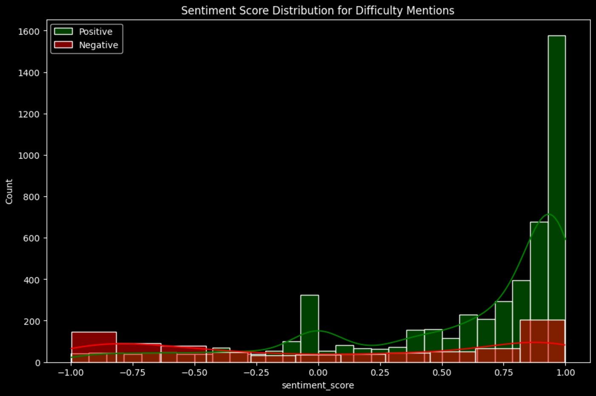

Statistical Analysis
With the models that we've implemented, we've tried to cover our research questions 1, 2 and 5. The other research questions do not require modelling and can be answered with some statistical analysis and visualizations.
Which genres are most associated with mentions of difficulty in reviews?
For every genre, we will take calculate the proportion of reviews mentioning difficulty. We do this by taking the ratio of the number of reviews of that genre with mentions_difficulty flag as 1, to the total number of reviews of that genre.
For "Co_op" and "Metroidvania" genres more than 18% of the reviews use atleast one word related to difficulty. "multiplayer" and "competitive" genres have the least proportion of reviews having words related to difficulty, with around 8% and 7% respectively.
How does the sentiment score distribution differ between genres?
We will calculate the average sentiment score of reviews for every genre and plot a scatter plot.

"competitve" and "multiplayer" genres have the lowest average sentiment scores for the reviews, with 0.18 and 0.21 respectively. "crpg" and "fantasy" have the highest with 0.47 and 0.46 respectively.
Does the player's experience level affect their sentiment towards game difficulty?
We will look at the distribution of sentiment scores for the 3 types of player experience levels that we defined: beginner, intermediate and experienced, using a boxplot.
All experience levels have the same median sentiment score, with slightly different upper quartile scores. We will perform ANOVA test to determine if there's statistically significant difference in these scores.
The test suggest there is a significant enough difference in scores between the experience levels. We can do a Tukey's test to analyse the groups further.
From this test we can see that there is enough difference in sentiment scores between beginner and experienced players, and beginner and intermediate players. But there isn't statistically enough difference between the scores of intermediate and experienced players.
How does the number of games owned by a player correlate with their review sentiment?
We calculate the Pearson Correlation between the author_num_games_owned and the sentiment_scores. We also make a scatter plot with a regression line to visualize this.
It is clear from the analysis that there is virtually no correlation between the number of games authors own and the sentiment scores of their reviews.
Do reviews mentioning difficulty tend to be more positive or negative overall?
We take a histogram of the distribution of sentiment scores for both positive and negative reviews which mention difficulty.
We can see that majority of the reviews mentioning difficulty tend to be positive, with sentiment scores on the higher side.
Are difficulty mentions more common in reviews with shorter playtimes compared to longer playtimes?
We make 5 bins of playtime: Less than 5 hours, 5-20 hours, 20-50 hours, 50-100 hours and 100+ hours. For each of these bins we plot the proportion of reviews mentioning difficulty that fall into this bin.
Around 25% of the reviews mentioning review tend to have less than 5 hours of total playtime. The overall trend is that with increasing playtime the proportion of reviews mentioning difficulty tends to decrease.
What are the most commonly expressed words in negative reviews mentioning difficulty?
We will make a word cloud of the most frequent words in negative reviews which mention difficulty.

Similar to our previous world clouds, words like "game", "play", "time" and "like" are common here.